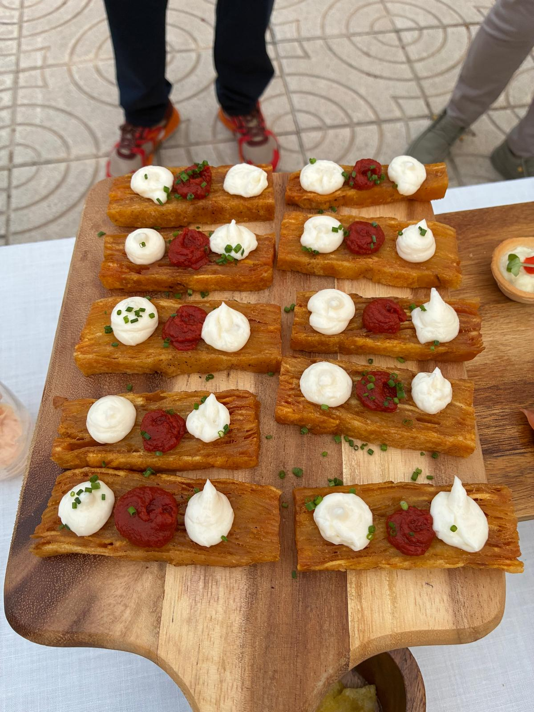
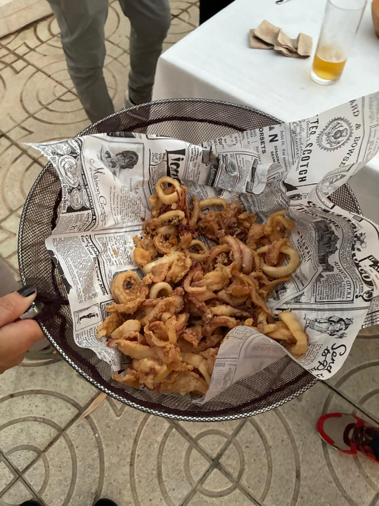
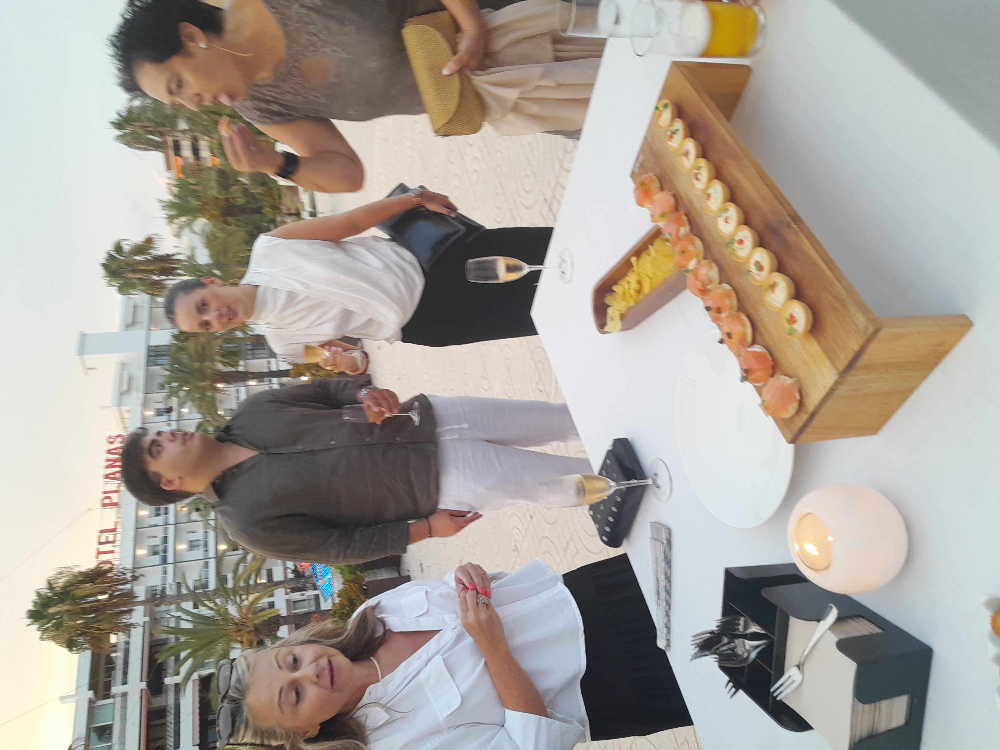
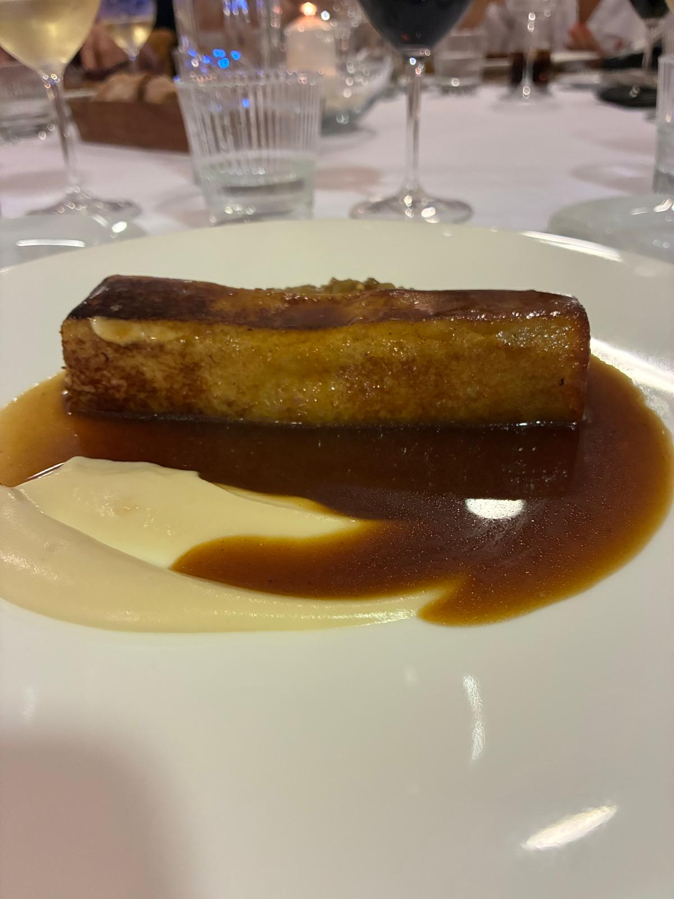
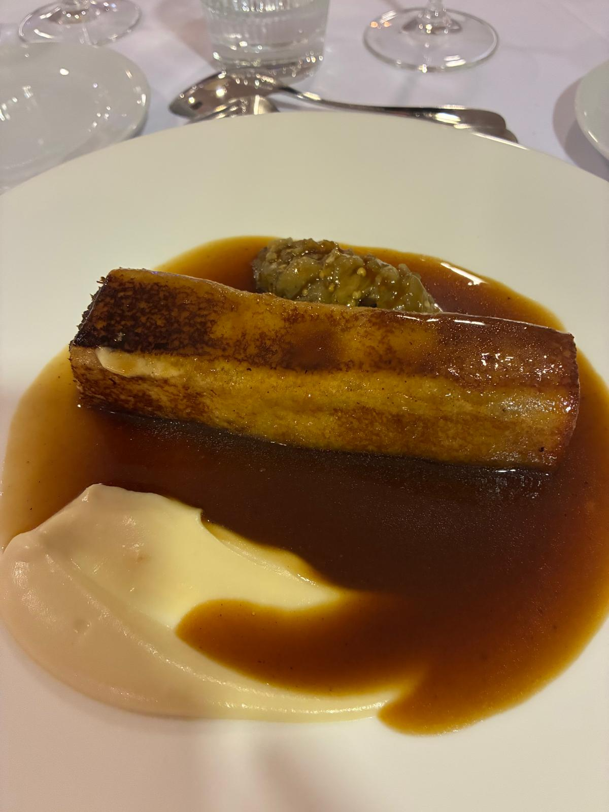
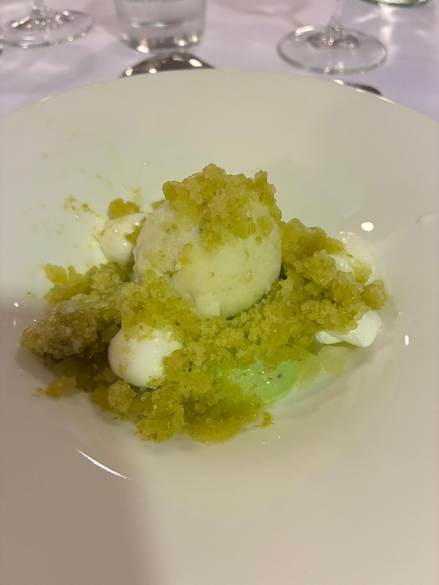

Una noche para hacer asociación
Hay cenas de valoración, de criterio, de análisis gastronómico. Y luego están las cenas como la del jueves 31 de julio en el Club Nàutic de Salou: las de hacer comunidad. Las de poner nombre y cara a los que hasta ahora solo eran una voz en el grupo de WhatsApp. Las de recordar por qué nos juntamos.
Éramos 54 personas entre socios, parejas y familiares. Una noche de verano calurosa, con el Mediterráneo al fondo y las ganas de cerrar bien la primera mitad de la temporada antes de la pausa de agosto. Sin invitado especial esta vez — y no hacía falta. La asociación fue su propio protagonista.

Cóctel frente al mar, con los pies en el aire
La noche arrancó de pie en la terraza del Nàutic. Y pocas introducciones mejores podría haber tenido: vistas directas a la playa de Salou, brisa marinera de las que justifican vivir en el Camp de Tarragona y un desfile de aperitivos que no dejaron a nadie quieto.
El cóctel fue generoso y variado: desde la elegancia del jamón ibérico Marcial D.O. Guijuelo sobre coca de aceite y tomate hasta el guiño más canalla de la gamba roja rebozada en kikos. En el medio, todo lo que hace que un aperitivo de pie funcione — la gilda de anchoa de l'Escala, los blinis de salmón y crème fraîche de estragón, la tartaleta de brandada de bacalao, el papadum de tartar de atún rojo Balfegó. Y ese momento de sorpresa colectiva que siempre provoca el cóctel nitro y la mamadeta nitro.
La degustación de arroz negro cerró el primer pase como se merece: con contundencia mediterránea y algún que otro comentario de "¿y si nos quedamos aquí toda la noche?". La respuesta, por suerte, fue que lo mejor todavía estaba por llegar.


La hoja de ruta del otoño, y bienvenidos los nuevos
Antes de pasar al salón, el presidente tomó la palabra. Sin alargar, sin protocolos vacíos — el tono fue el de siempre en esta asociación: cercano, directo y con algo de humor. Presentó las próximas cenas de la temporada, recordó que septiembre llega antes de lo que parece y deseó a todos un feliz verano bien merecido.
Hubo también un momento especial: la presentación de los socios que se han incorporado estos últimos meses. Caras nuevas que ya no lo son tanto — llevan semanas en el grupo, en los hilos de conversación, en los debates sobre si el arròs de peix del último restaurante estaba en su punto o no. Ahora, con nombre y apellidos en sala, pasan a ser parte del tejido. Bienvenidos a la tribu.


Al fresco y con mantel — la cena propiamente dicha
El paso de la terraza al salón fue agradecido. Fuera quedó el calor de julio; dentro, el aire acondicionado, las mesas bien vestidas y la sensación de que la noche iba a ser larga en el buen sentido. El Nàutic demostró que sabe manejar grupos grandes sin perder la atención al detalle.
El plato principal fue un canelón crujiente de royal de ternera con foie mi-cuit en su jugo — un plato de esos que no hacen ruido al llegar pero convencen desde el primer bocado. Técnica sin estridencias, ingrediente de calidad y una combinación que gustó de manera casi unánime. Exactamente lo que se le pide a una cena de estas características: que el plato principal no eclipse la conversación, sino que la acompañe.
El cierre fue refrescante y bien pensado: sorbete de manzana Granny Smith con yogur, granizado de apio i lima y cremoso de aguacate. Un postre que llega a los socios en pleno julio como agua fresca: ligero, cítrico, con ese punto de sorpresa que deja buena memoria.


Música, baile y hasta septiembre
Cuando los últimos cafés se habían enfriado a medias, llegó lo que muchos estaban esperando: música y pista de baile. Porque si algo define bien una cena de verano de esta asociación es que el sobremesa no se termina cuando se retiran los manteles. En el Club Nàutic, la noche se alargó con ganas, con risas y con esa energía que solo da el baile en buena compañía.
Era el cierre perfecto para la primera parte del recorrido 2026. Kema en marzo, La Goleta en abril, El Terrat en mayo — tres visitas intensas, tres experiencias muy distintas, muchos debates y el medidor de criterio bien afinado. Agosto llega como merece: con el depósito lleno y el paladar bien ejercitado.

Una asociación que se hace en la mesa
Las cenas de verano no se valoran con puntuaciones. No hay ficha técnica, no hay comparativa de cocinas, no hay debate sobre si el punto de sal era el justo. Lo que hay es tiempo compartido, y eso tiene un valor que no cabe en ningún formulario de valoración.
Cincuenta y cuatro personas en una terraza frente al mar, luego en un salón bien acondicionado, luego en una pista de baile que nadie quería abandonar. Nuevos socios que ya son parte del grupo. Caras conocidas que siguen construyendo algo juntas. Eso es lo que somos los Gourmets de Tarragona cuando no estamos valorando restaurantes: una asociación de verdad.
Nos vemos en septiembre. Con hambre y con ganas.
Cena de Verano 2026 · Gourmets de Tarragona · 31 de julio · Club Nàutic de Salou.